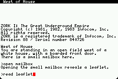
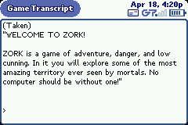
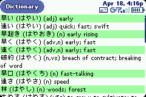
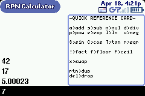

Brian's Hiptop Software
Here are some small Hiptop applications I've been working on when
time permits. Visit
developer.danger.com to obtain the hiptop SDK and all sorts of useful information
about developing for the device.
Z Machine (Infocom Runtime)
This is an implementation of the
Z Machine,
the virtual machine that Infocom designed to
run their (now classic) text adventure games (Zork, Enchanter, etc).
You need a story file (either an original Infocom one or one of the
many that have been written since the virtual machine was reverse
engineered) in addition to this runtime. V3 games are playable,
but there may well be bugs. The V5 support is not tested
terribly well (curses.z5 seems playable) and is incomplete.


This was the result of about two weekends of hacking and some assorted
tinkering here and there. It's not the most beautiful code in the world,
but it demonstrates a bunch of useful stuff. For example: handling
multiple windows, saving data that gets archived on the service, doing
work in another thread, loading raw data from resources, creating
windows and dialogs from resources. You can browse the
source code.
- hiptop application
- virtual machine (platform agnostic)
Japanese Input Method
Very much a work in progress. Only works on the device (due to lack
of fonts in the simulator).
Browse the source code.
Japanese Dictionary (based on
edict data)
Not quite as rough around the edges as the Input Method, but also
only works correctly on the device.

Browse the source code.
RPN Calculator
Everyone should write a calculator for the hiptop.
This one is based on the handy
hipfloat library that Dan Sachs wrote.

Browse the source code
You can find complete archives of all the above apps here.
makefile
Being a grouchy UNIX user, I much prefer Makefiles to this new-fangled
ANT stuff. If you drop
hiptop.mk in your
project directory, you can create a makefile like:
APPNAME := zmachine
INTERFACES := Resources.java Events.java
BUNDLENAME := net.frotz.zmachine
include hiptop.mk
The INTERFACES definition must list any files that are generated by
drc (the stuff listed in your interface and events directives).
APPNAME is used to decide what to name your .bndl file and such.
You can specify "SCREEN := color" or "SCREEN := gray".
You should set SDKHOME to be the path to the hiptop sdk (the
directory that contains libs, tools, etc).
You should be able to build your app (on Linux at least) using make.
make run to start up the simulator after building...